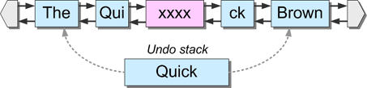

Piece Chains
さて、今回はシンタックスハイライトを実装したのは嘘です。正規表現地獄」にはまってしまい、何か他に集中できるものが必要だったのです。そこで、夏の間、代わりにNeatpadのテキスト編集機能を少しずつ実装してきました。このチュートリアルシリーズの最初の回でほのめかしたように、私は「ピーステーブル」のデザインを採用することにしました。このチュートリアルの目的は、この決定の理由を説明し、実装の詳細を紹介することにあります。なお、Unicodeテキストの編集に関する問題については触れません（これについては次のチュートリアルで説明します）。その代わりに、ユニコードの問題とは無関係に、低レベルの観点からピーステーブルの設計を見ていきます。
私がHexEditを書き始めた数年前には、エディタのデザインに関する情報はほとんどありませんでした。当時はまだGoogleは存在せず、AltaVistaが検索エンジンでした。私は33kのダイアルアップモデムを使っていましたが、当時偶然見つけた唯一の情報源は、Charles Crowleyという大学教授が書いた論文でした。彼の論文「Data Structures for Text Sequences」と彼が説明した「Piece Table」アプローチは、HexEditの設計に大きな影響を与え、最も洗練されたhex-editorsの1つとなりました。後に私は、HexEditのピーステーブル設計（当時はスパンテーブルと呼んでいた）を「Memory Management for Large File Editors」という記事で紹介しました。今日では、ピーステーブルに関する情報が少しずつ増えてきており、このデザインを自分のプロジェクトで使用している人の証拠も増えてきているようです。
- AbiWordは、非常に優れたクロスプラットフォームのオープンソースのワープロパッケージです。著者の中には、ブログでAbiWordのデザインについて議論している人もいます。特に注目すべきは、AbiWordのピーステーブルのデザインに関する議論で、著者はピーステーブルの「赤黒」の二分木表現への移行について詳しく説明しています。
- WinAsm Studioは、アセンブリ言語によるプログラミングのためのIDEです。Antonis Kyprianou(著者)は、このIDEに組み込むための「ピーステーブル」ベースのエディタも書いています。
- Tweakは、ターミナルベースのUnixの16進法エディタです。ウェブサイトの説明によると、tweakはファイルへの編集を表現するためにバイナリツリーのデータ構造を使用しています。この記事は一読の価値があり、非常に興味深い情報が掲載されています。
- C++ Ropeクラスはとても面白そうですね。私は、そのページに書かれていること以外、ほとんど何も知りません。説明によると、ロープクラスはピーステーブル実装を使用しているようですが、私はこれを確信していません。
ピーステーブルは決して新しいものではなく、数年前から何らかの形で存在していました。
- Xerox PARC（Palo Alto Research Center）は、1970年代にテキストエディター「Bravo」を開発しました。BravoはCharles Simonyi氏とButler Lampson氏の作品で、編集機能を実装するために「Piece Chain」を使用していました。残念ながら、Bravoが動作していたAltoプラットフォームは非常に古くなってしまったため、Bravoエディタに関する情報はもう手に入らないようです。もしかしたら、Altogetherプロジェクト（Altoのエミュレータ）が軌道に乗り、これらの古いコンピュータシステムを再発見できるかもしれません。
-
Project Oberonは、オペレーティングシステム、コンパイラ、プログラミング言語です。コンピュータ科学の古典である『Project Oberon』は、こちらからPDF形式で入手でき、Oberonプラットフォームの設計について詳しく書かれています。この本には、テキスト管理に関する非常に興味深い章があり、その中でピースチェイン技術が詳細に説明されています。
- Mutable Textは、テキストストリームを編集するためのModula-3インターフェースです。MTextは、効率化のためにバランスドバイナリーツリーを使ったピーステーブルデザインを実装しています。MTextインターフェイスに関する情報は、Compaqの古い研究用ウェブサイトからしか得られませんでした。Compaqはもう存在しない（HPが買収した）ので、この情報を見つけるにはGoogle-Cacheを使わなければなりませんでした。
ピースチェーンの技術は、30年以上前から存在しており、最初に注目されたのはBravoエディターでした。驚くべきことに、この手法は現在でも非常に珍しいものなのです。
The Perfect Text Editor
もちろん、完璧なテキストエディタというものは存在しません。そうでなければ、皆が同じツールを使っているはずですし、私が完璧なエディタのビジョンを作ろうとして、この記事シリーズを書くこともないでしょう。
エディタのユーザーインターフェイスのデザインの圧倒的な違いを無視しても、エディタの実装には大きな多様性があります。つまり、すべてのテキストエディタが採用している単一の「真の」デザインは存在しないということです。例えば、バッファギャップ方式、行間リンク方式、ピースチェーン方式などがあります。
ピースチェーン方式があまり一般的でない理由の一つは、テキストエディタでの実装が複雑なことです。難しいのは実際のピース管理ではなく、エディタのラインバッファの管理が面倒なのです。このような理由から、多くのエディタはピースチェーンを実装しないことにしており、ViやEmacsのような成熟したエディタは、このようなデザインでなくても非常に成功していると言えます。
このような手法が存在するということは、テキストエディタに圧倒的な「ベスト」デザインが存在しないことを示しています。Neatpadにピーステーブルを導入することが正しい判断なのかどうかは、今のところわかりません。しかし、私はこのプロジェクトを完成させたいと思っています。少なくとも、ピーステーブルのデザインがプレーンテキストエディタに適しているかどうかは、何らかの方法で知ることができるでしょう。
Piece Chains with Linked Lists
Neatpadは、HexEditのオリジナルデザインを忠実に再現した二重リンクリストを使って、ピースチェーンデータ構造を実装しています。これは、HexEditのオリジナルデザインを忠実に再現しています。バイナリツリーなどの他の構造を使用することもできますが、単純さの点でリンクリストが好まれます。HexEditのオリジナルデザインでは、ピースチェーンの始点と終点を表すHeadとTailのポインターが用意されています。ほとんどの人はこの概念を知っていると思いますが、知らない人は先に進む前にこのテーマについて読んでみることをお勧めします。いずれにせよ、HexEditで使用した古典的な2重リンクリストを以下に示します。

以下のスニペットは、このようなリンクリストの初期化方法を示しています。
// sequence constructor
sequence::sequence()
{
head = NULL;
tail = NULL;
}
このデザインのちょっとした問題点は、ヘッドポインタとテールポインタの管理方法です。ノードがリストの前後に挿入されるたびに、このような「特別な場合」の条件を処理するために特定のコードが必要になります。なぜなら、ヘッドまたはテールのポインタが新しいノードを指すように更新される必要があるからです。リンク管理は煩雑で、シーケンス操作を非常に複雑にしています。
もう一つのデザインは、「センチネル」と呼ばれるノードを維持することです。このモデルでは、リストの最初と最後に2つのダミーノードが導入されます。その内容は定義されませんが（長さは0になります）、その存在自体が、リストのすべてのノードが有効な隣人を持つことを保証することになります。言い換えれば、センチネル自体を除けば、すべてのノードの次のリンクと前のリンクは常に有効なノードを指しています。これにより、リストの最初と最後の挿入や削除を処理するための「特殊なケース」のコードは基本的に削除されます。
Linked-list with sentinel nodes.
さらに説明すると、空のリストには2つのノード、つまりヘッドセンティネルとテールセンティネルが含まれており、これらは単にお互いを指しているだけです。
Empty list.
このリンクリストのデザインをサポートするのはとても簡単です。ヘッドポインタとテールポインタをNULLに初期化する代わりに、2つの「空」のノードを作成し、お互いにリンクします。その後に追加されたノードは、センティネルの間に挿入されます。
sequence::sequence()
{
head = new span(0, 0, 0);
tail = new span(0, 0, 0);
head->next = tail;
tail->prev = head;
}
この単純なアイデアで、どれだけの作業を省けるかは驚くべきことです。もちろん、この方法は私の手柄ではありません。何年も前にMichael Abrash氏のアセンブリ最適化の本の中でこのトリックを読んだことがあります。
Spans and Pieces
ピースチェーンという用語は、データ構造の中でテキストの断片が連鎖していく様子をすぐに想像できるので、簡潔で良いと思います。しかし、Neatpadでは、チェーン内の各テキストピースを表すのにspanという用語を使っていますが、これは純粋にHexEditでのやり方がそうだったからです。ピースとスパンの間には、名前以外の違いはなく、どちらも同じ目的を持っています。
// span - private to the sequence
struct span
{
span * next;
span * prev;
size_w offset;
size_w length;
int buffer;
};
ピーステーブルは、spanオブジェクトをnextとprevのリンクで連結することで形成されます。リンクリストは、データ構造全体を単一のオブジェクトにカプセル化したシーケンスC++クラスによって維持されます。編集用のインターフェイスとして、挿入、置換、消去の各関数が用意されています。
// define the type of strings the sequence will hold
typedef wchar_t seqchar;
class sequence
{
public:
bool insert (size_w index, seqchar *buffer, size_w length);
bool replace (size_w index, seqchar *buffer, size_w length);
bool erase (size_w index, size_w length);
bool undo ();
bool redo ();
// other members snipped
private:
span * head; // pointers to list sentinels
span * tail;
};
スパンの基本的な考え方は、基礎となるファイルコンテンツへのインダイレクトのレベルを提供することです。個々のノードは、いかなるテキストも格納しません。オリジナルファイルに格納されたテキストの範囲、またはテキストの挿入によって追加されたmodify-buffer内のテキストの範囲を参照するだけです。上記の定義から、スパンにはテキストを格納する手段がないことがわかります。代わりに、オフセット、長さ、バッファの各フィールドが、オリジナルファイルのテキストの範囲（または部分）を特定します。
下の図は、典型的なピースチェーンの構成を示しています。original file」バッファは、「The brown fox jumped over the lazy dog」というテキストで初期化されています。このテキストは、modify バッファに追加されていますが、「ing」という単一の単語がシーケンスに挿入されています。ピースチェーンのスパンは、シーケンス「The jumping dog」を形成しています。
" class="align-center">
ここで重要なことは、スパンはシーケンス内の論理的な位置を知らないということです。スパンが知っているのは、参照しているデータの物理的な位置だけです。このため、新しいスパンをピースチェーンに挿入または削除しても、リスト内の他のスパンには影響を与えないという利点があります。ピーステーブルの挿入と削除が非常に高速なのはこのためです（挿入する場所がわかっている場合）。
ピーステーブルの柔軟性は、同時に最大の欠点でもあります。スパンは自分の論理的な位置を知らないので、ドキュメント内の特定のテキストオフセットに直接アクセスする方法がありません。すべてのアクセスは、リストの先頭から始めてリンクされたリストを経由しなければなりません。特定の文字のオフセットを見つけたいときは、各スパンを順に繰り返し、現在の論理的位置を追跡するために、その長さを合計しなければなりません。
span * sequence::spanfromindex (size_w index, size_w *spanindex = 0)
{
span *sptr;
size_w curidx = 0;
// scan the list looking for the span which holds the specified index
for(sptr = head->next; sptr->next; sptr = sptr->next)
{
if(index >= curidx && index < curidx + sptr->length)
{
if(spanindex)
*spanindex = spanidx;
return sptr;
}
spanidx += sptr->length;
}
// insert at tail?
if(sptr && index == curidx)
{
*spanindex = curidx;
return sptr;
}
return 0;
}
上記の spanfromindex 関数は、スパンの位置を特定するためにピースチェーンを最初から走査する方法を示しています。各スパンの長さは、正しいノードが見つかるまで合計されます。リンクリストの設計が単純であることは、最大の欠点でもあります。リンクリストへのランダムアクセスは遅いのです。
Unlimited Undo & Redo
理論的には、ピーステーブルを使えば、無制限のundo+redoは信じられないほど簡単です。実際、ほとんど「無料」です。これが、この技術が魅力的である理由のひとつです。私にとっての大きなセールスポイントは、ピースチェーンが（コンピュータ科学の用語でいうところの）永続的データ構造であることです。つまり、ピースチェーンは、変更されても古いバージョンの自分自身を保存することができるのです。最も重要なのは、これらの古いバージョンが、データ構造の完全性を維持したまま、簡単に復元できることです。
編集中のファイルの基本的なデータは変更されないことを覚えておくことが重要です。ファイルの変更を表現するために変更されるのはリンクリストのノード（スパン）だけです。そのため、変更されたドキュメントの内容を含む別のデータバッファを維持する必要はありません。ピースチェーンがもたらすメモリの節約は、この方法で追加される複雑さを正当化するのに十分なほど重要です。
Neatpadのアンドゥ/リドゥの実装の鍵は、スパンレンジの使用にあります。簡単に言うと、スパンレンジとは、シーケンス内のスパンの連続した範囲を表すオブジェクトです。ピースチェーンが操作されるたびに、スパンレンジオブジェクトがアンドゥスタックにプッシュされ、編集の影響を受けるスパンの範囲を表します。
struct span_range
{
span * first;
span * last;
bool boundary;
size_w sequence_length;
};
したがって、各スパンレンジは、シーケンスに対する1つの修正を表すために使用されます。最初と最後のフィールドは、特定の編集操作を包含するスパンの範囲を示します。範囲内のすべてのスパンは、通常のnextとprevのポインタを使用して内部的にリンクされています。span-rangeは、概念的には複数のスパンを連結して保持することができますが、firstとlastの両方を同じスパンに向けることで、単一のスパンを参照することもできます。
各スパンレンジ内にシーケンスレングスが格納されていることに注目してください。これは、操作を取り消したりやり直したりするたびに、シーケンス長を再計算したくないからです（大きなピースチェーンでは、再計算すると非常に時間がかかります）。シーケンスを編集する前にシーケンスレングスを保存しておけば、アンドゥの際にこの値を簡単に復元できます。
スパン境界は、スパン範囲の特殊な形態です。スパン境界は、隣接する2つのスパンの間のギャップと考えてください。スパン範囲は、このような形の「空」の範囲を表すためにも使用され、その境界フィールドは、どのような種類の範囲であるかを示すために「true」に設定されます。

上の画像は、両方の種類のスパンレンジを示しています。左側の範囲は「通常の」範囲で、boundary は false に設定されています。右側の範囲は「空」の範囲で、span-rangeオブジェクトのboundaryフィールドがtrueに設定されています。
実際には、スパン・レンジは履歴を保持するだけではなく、挿入や消去の際にスパンを操作する際の補助的なヘルパー・オブジェクトとしても使用されます。スパンレンジは、ピースチェーンのセクションをシーケンスに出し入れする際に保存する便利な方法です。
Inserting Data
データの挿入は、圧倒的に簡単に実装できます。考慮すべき基本的なシナリオは、スパンの中央に挿入する場合と、スパンの境界に挿入する場合の2つです。これらの操作を詳しく見ていくと、テキストシーケンスの編集は、リストのスパンの変更に過ぎないことを覚えておいてください。なお、これらの例では、テキストは各スパンの中に含まれていることが示されています。実際には、スパンにはテキストは含まれておらず、元のバッファや修正バッファのテキストの範囲を参照していることがわかっているからです。さらに、ヘッドとテールのセンチネル・ノードも、リストの両端にあるグレーのブロックとして表示されています。
スパンの途中で挿入するというのが、最初のシナリオです。まず、ピースチェーンを次のような状態にします。
シーケンスにはテキスト "TheQuickBrown "が格納され、リンクリストには何らかの理由で3つのスパンが格納されています。最初の例では、インデックス "6 "に文字列 "xxxx "を挿入します。シーケンス内のこの位置は、たまたま2つ目のスパンの中央に位置しています。

スパンの途中で挿入するには、スパンを2つに分割する必要があります（挿入ポイントの前後のデータを表す）。この2つの新しい部分の間に、実際に挿入されるデータを表す3つ目の部分がリンクされます。予想通り、挿入されたデータは「修正バッファ」に追加され、元のファイルバッファはそのまま残されます。

概念的には、「挿入」を表現するためにスパンを半分に分割しましたが、実際にはこのようなことはしません。ピースチェーンを見ると、「Quick」という単語を表すスパンがシーケンスから削除され、3つの新しいスパンで置き換えられているのがわかります。しかし、このスパンを削除するのではなく、span-rangeオブジェクトの中に保持することで保存しています。このスパンレンジは、挿入によって変更されたスパンの範囲を表すために、「元に戻すスタック」に押し込まれます。
このスパン保存の戦略は、今回の永続的データ構造の実装において重要です。挿入が行われた後、ピースチェーン内のどのスパンも「Quick」スパンを参照しなくなっていることに注目してください。しかし、「Quick」は、メインリストに戻る独自のリンクを維持しています。これは非常に重要な点で、順序を元に戻す（この最後のアクションを元に戻す）際に、undo-stack上のスパンがリストのどの位置に再挿入されるべきかを知る必要があるからです。
今回のシナリオでは、sequence::insert関数を用いて、データの挿入方法の基本的な概要を示しています。
// initialize a new 'undo'. It will be pushed onto the undo-stack.
span_range *oldspans = init_undo(index, length, action_insert);
span_range newspans;
// preserve the span that we are inserting into
oldspans->append(sptr);
// new spans for before and after the insertion point
newspans.append(new span(sptr->offset, insoffset, sptr->buffer));
newspans.append(new span(modbuf_offset, length, modifybuffer_id));
newspans.append(new span(sptr->offset+insoffset, sptr->length-insoffset, sptr->buffer));
// insert the new pieces into the sequence!!
swap_spanrange(oldspans, &newspans);
sequence_length += length;
Neatpadの配列変更は、すべて同じ基本パターンに従います。
- シーケンスから削除されるスパンは、"oldspans "というスパンレンジ内に格納されます。
- シーケンスに導入されるスパンは、"newspans "というスパンレンジの中に格納されます。
- oldspans」はundo-stackに押し込まれます。
- そして、2つのスパン・レンジを入れ替えます。
次に、スパンの境界に挿入する場合を考えてみましょう。この例では、2文字の文字列 "yy "が再びシーケンスポジション "6 "に挿入され、"Qui "と前回挿入した "xxxx "の間に入ります。
今回は、"Qui "ノードと "xxxx "ノードの間に、1つのスパンがリストに挿入される。この動作を表すundo-eventは、insertion-boundaryの両側のスパンを保持するspan-rangeである。この「スパン境界」は「*」記号で区別される。これらのスパンが再びリンクリストへのリンクを維持していることに注目してください。

もうひとつの重要な点は、新しいスパンレンジが追加されたことで、アンドゥスタックが大きくなっていることです。マルチレベルのアンドゥがどのように実装されているかお分かりいただけたでしょうか。シーケンスを編集するたびに、undo-stackに別のスパンレンジが押し込まれます。このスタックの各エントリは、その特定の編集操作によって影響を受けたスパンの範囲を表しています。undo」を実行するたびに、スパンレンジはundo-stackから「popped」され、メインのリンクリストに再び挿入される。置き換えられたスパンは削除されますが、リストに戻るための独自のリンクは維持されます。undo中に削除された各span-rangeは、redoスタックに押し込まれます。
今回は1つのスパンしか挿入されないので、スパン境界挿入のコードはよりシンプルになっています。
// initialize a new 'undo'
span_range *oldspans = init_undo(index, length, action_insert);
span_range newspans;
// this is a 'boundary insertion'
oldspans->spanboundary(sptr->prev, sptr);
// single span for the inserted data
newspans.append(new span(modbuf_offset, length, modifybuffer_id));
// insert the new span into the sequence in place of the old ones
swap_spanrange(oldspans, &newspans);
sequence_length += length;
コードは以前と同じパターンで、「oldspans」を定義し、「newspans」を集めて、それらを入れ替えます。今回の唯一の違いは、「oldspans」の定義方法です。境界挿入のケースではスパンは変更されていないので、span-rangeは、挿入した境界の両側のスパンを指すことで、スパン境界を表している。
Erasing Data
シーケンスからデータを消去するのは、もっと複雑です。実際には、もっともっと複雑です。問題は、削除が複数のスパンにまたがる可能性があり、スパンの途中で開始したり停止したりすることです。ここでは、そのようなシナリオを想定しています。
- 消去は、スパンの境界から開始します。
- 消去はスパンの途中から始まります（その場合はスパンを分割する必要があります）。
- 消去は、スパンとノードの境界で停止します。
- スパンの途中で停止した箇所を消去する（この場合もスパンは分割されているはず）。
また、1つの削除が複数のスパンにまたがる場合も考慮しなければなりません。この場合、上記の4つのシナリオすべてを考慮しなければなりません。また、削除箇所が1つのスパンに完全に含まれる場合もあります。この場合も、境界条件やスパン中間部の条件を考慮する必要があります。
HexEditのピースチェーン実装で私が犯した過ちは、これらのケースをすべて別々に処理したことで、結果的に非常に複雑なコードになってしまいました。私がすべきだったこと、そして今回私がしたことは、すべてのシナリオを処理する1つの「一般的なケース」を用意することでした。

上の例では、複数のスパンにまたがる削除を行っており、スパンの途中で開始したり停止したりしています。
削除はリストのすべてのスパンに影響を与えたため、リンクリスト全体がスパンレンジの形で undo-stack に押し込まれ、削除されたレンジの前後のデータを表す 2 つの新しいスパンに置き換えられます。
コードはまず、削除がスパンの途中から始まっているかどうかをチェックします。削除された場合、そのスパンは oldspans の範囲に追加され、削除インデックスの直前のスパンのデータを表す代替スパンが作成されます。この「分割」されたスパンはnewspansの範囲に追加されます。
// does the deletion *start* mid-way through a span?
if(remoffset != 0)
{
// split the span - keep the first "half"
newspans.append(new span(sptr->offset, remoffset, sptr->buffer));
// have we split a single span into two?
// i.e. the deletion is completely within a single span
if(remoffset + removelen < sptr->length)
{
// make a second span for the second half of the split
newspans.append(new span(
sptr->offset + remoffset + removelen,
sptr->length - remoffset - removelen,
sptr->buffer)
);
}
removelen -= min(removelen, (sptr->length - remoffset));
// archive the span we are going to delete
oldspans.append(sptr);
sptr = sptr->next;
}
この最初のシナリオが処理されると、削除範囲の最後に到達するまで、ループを使用してさらにすべてのスパンを処理します。削除範囲」に該当するすべてのノードは、oldspansコンテナ・オブジェクトに追加されます。削除がスパンの途中で停止した場合のシナリオを処理するために、特殊なケースが使用されます。
// we are now on a proper span boundary, so remove
// any further spans that the erase-range encompasses
while(removelen > 0 && sptr != tail)
{
// will the entire span be removed?
if(removelen < sptr->length)
{
// split the span, keeping the last "half"
newspans.append(new span(
sptr->offset + removelen,
sptr->length - removelen,
sptr->buffer)
);
}
removelen -= min(removelen, sptr->length);
// archive the span we are replacing
oldspans.append(sptr);
sptr = sptr->next;
}
最後にすることは、「oldspans」と「newspans」を入れ替えて、配列長を更新することです。
swap_spanrange(&oldspans, &newspans);
sequence_length -= length;
これらのコードはすべて sequence::erase メンバ関数に含まれていますが、ここで紹介したものよりもはるかに複雑です。特に、「最適化」された削除のための特殊なケースがあり、必要なコードの量はほぼ2倍になります。このプロセスをこれ以上詳しく説明するつもりはありません。興味のある方はダウンロードしたソースコードをご覧ください。
Replacing Data (overwriting)
データの置き換えは、実装が最も複雑な操作であり、消去と挿入を組み合わせて1つの機能にしたものと考えるべきです。sequence::replaceを実装する際には、これらの最初の2つの操作の複雑さをすべて考慮する必要があります。さらに，「最適化された置換」シナリオ（複数の連続した置換を1つの操作にまとめる）は，replaceを非常に複雑にします．ここでは詳細を説明しませんが，ダウンロードしたソースコードには必要な情報がすべて含まれていますので，ご安心ください．
HexEditのシーケンスクラスを最初に書いたとき、シーケンス内のデータを置き換えるためのルーチンを別個に書いてしまったのがもう一つの失敗でした。すでに複雑になっていた「消去」関数のコードを複製して、新たに「置換」関数を作りました。さらに、データを挿入するコードを追加したため、さらに複雑になってしまいました。重複したコードのために、コードの管理が非常に難しくなってしまいました。
2回目は同じ間違いをしませんでした。Neatpadのsequence::replace関数は、sequence::eraseとsequence::insertのラッパーに過ぎません。まず最初にeraseが呼ばれ、置き換えられるデータの範囲を削除します。これにより、一時的にシーケンスが短縮されます。次にinsertが呼ばれ、「replace」データが削除された場所に挿入され、シーケンスが元の長さに戻ります。重要なのは、これらの2つのアクションがグループ化されており、1つの元に戻すことができないアクションとして表示されることです。
bool sequence::replace(size_w index, seqchar *buffer, size_w length)
{
group();
erase(index, length);
insert(index, buffer, length);
ungroup();
}
sequence::replaceをこのように記述することで、シーケンスの実装が大幅に簡素化されました。最適化された置き換え」の問題があるため、私が考えているほど簡単ではありませんでした。シーケンス::消去関数は、「通常の消去」と「置き換えによる消去」に対応するために、わずかなロジックを持たなければなりません。しかし、一般的には、この「ショートカット」は、以前に行っていた方法よりもはるかに好ましいと感じました。重要なのは、消去や挿入の関数を変更しなければならないとき（例えば、バグのため）、並行してreplace関数を変更する必要がないということです。
Piece-chain demo application
ピースチェーンの実装をテストするのは、微妙なシナリオが発生する可能性があるため、かなり困難です。私はまず、単純なコンソールアプリケーションで「インデックステキストを挿入」や「インデックス長を消去」と入力することから始めました。これはかなり面倒だったので、以前のチュートリアルで書いたUspLib Demoアプリケーションを利用して、「Piece Chain Demo」を作ってみました。

この形式のテストハーネスは、各操作後のピースチェーンの状態を即座にフィードバックしてくれるので、非常に便利です。また、Original File、Modify-Buffer、Undo stackの内容も表示されます。ピースチェーンをNeatpadに統合してしまった今となっては、それほど便利ではありませんが、少なくともピースチェーンについて学ぼうとしている人には面白いかもしれません。ぜひ試してみてください。
Linked Lists vs Binary Trees
ピーステーブルをどのように表現するかについては、いくつかの議論があります。2つの主な選択肢は、リンクリストか、ある種のバイナリツリーです。今のところ、Neatpadでは、ピーステーブルの管理に二重リンクリストを使用しています。この方法は、私のHexEditアプリケーションで効果的であることが証明されていますが、リンクリストがテキストエディタに適しているかどうかは、まだわかりません。
リンクされたリストは、操作やトラバースが非常に簡単です。しかし、リストに多数のノードがある場合、特定の文字位置を探すのに非常に時間がかかる可能性があります。なぜなら、特定のノードが必要になるたびに、リストを最初から走査しなければならないからです。キャッシングは、リンクリストの速度問題のほとんどを解決することができます。なぜなら、シーケンスに対する操作の大部分は非常に局所的なものだからです（一度に入力できるのは、ドキュメントの固定されたビューポート内だけです）。最後にアクセスされたスパンをキャッシュすることで、ここでも大きな改善が得られます。
一方、二分木はその正反対の性質を持っています。バランス型二分木は、検索には向いていますが、挿入や修正には向いていません。検索は常にO(log N)なので、何千ものノードを持つシーケンスであっても、特定の文字位置の検索は常にかなり高速です。しかし、バイナリツリーの操作はリンクリストに比べて常にかなり高価です。ノードがバイナリツリーに挿入されるたびに、ツリーはリバランスされ、そのノードのすべての子は変更を反映して更新されなければなりません。
いずれの場合も、選択したデータ構造の複雑さ（含まれるスパンの数）は、ファイルの編集回数の関数であり、ファイルのサイズや含まれる行数とはまったく関係ありません。このため、ピースチェーンは、非常に大きなファイルであっても拡張性が高く、優れたデータ構造となっています。これは、大規模なファイルには対応できない「行のリンクリスト」モデルよりもはるかに優れています。私の意見では、ピーステーブルは間違いなく最適なデータ構造です。
純粋にpiece-tableの編集だけを考えた場合、リンクリストの方が優れていると思います。もし、データ構造を他の種類の検索（行番号の検索や行番号と文字オフセットのマッピングなど）に使用する必要がある場合は、バイナリツリーの実装に移行する必要があるかもしれません。
C++ templates and VS2005
今のところ、C++のテンプレートを使ってシーケンスクラスを実装したいという誘惑には勝てませんでした。これは、VC6.0のテンプレートサポートが貧弱であることが主な理由ですが、初期バージョンでは、C++プログラマーでなくても理解できるように「クリーン」にしたかったのです。現在、シーケンスクラスは、テキストの基本単位として、ハードコードされた'seqchar'データタイプを使用しており、これは現在16ビットのWCHARタイプです。sequence.hの先頭にあるtypedef文を変更するだけで、シーケンスを他の文字型に対応させることができるので、当面の間、テンプレートは必要というよりは贅沢なものとなるでしょう。
しかし、私は最近VS2005を使い始め、より優れたC++コンパイラを利用する機会を得ました。もし、VS2005に移行すると、プロジェクトに互換性がないため、VC6.0でNeatpadをコンパイルすることが難しくなります。また，シーケンスクラスをテンプレート実装に変更すると，VC6.0ではNeatpadをまったくコンパイルできなくなります。この提案について、みんなはどう思う？もしコメントがなければ、私はVS2005への移行を進めますが...。
Conclusion
私は、ピースチェーンの実装をできる限りシンプルにすることを意図しています。現段階では、ピースチェーンの実装をバイナリツリーに移行する必要はないと考えていますが、パフォーマンスが問題になるようであれば、今後のチュートリアルでこの問題に取り組む必要があるかもしれません。重要なのは、リストを使おうがツリーを使おうが、実際には問題ではないということです。すべてはシーケンスC++クラスの中にカプセル化されているので、バイナリツリーに変更しても他の設計には実質的な影響はありません。
ピーステーブルは実際には非常にシンプルな概念であり、この記事から想像されるほど複雑ではありません。複雑なのは、編集が発生するたびにピースチェインが最適化される方法から生じます。連続した挿入、消去、置換は、リスト内のスパン数が常に最小になるようにまとめられます。このため、編集が発生するたびにテーブルに新しいスパンを導入するのではなく、個々のスパンを「その場で」調整する必要があります。これは、undo/redoのサポートも複雑にします。このように最適化されていないピースチェーンは非常にシンプルですが、残念ながら「現実世界」のピースチェーンが成功するためには、これらの機能を備えていなければなりません。
次のチュートリアルでは、ピースチェーンのデザインをどのようにNeatpadに統合したかを中心に説明します。Unicodeテキストの編集には微妙な問題があるため、議論すべきことがたくさんあります。また、適切な「メモリ管理」と大容量ファイルのサポートを実装する必要があります。これについても、後のチュートリアルで取り上げます。